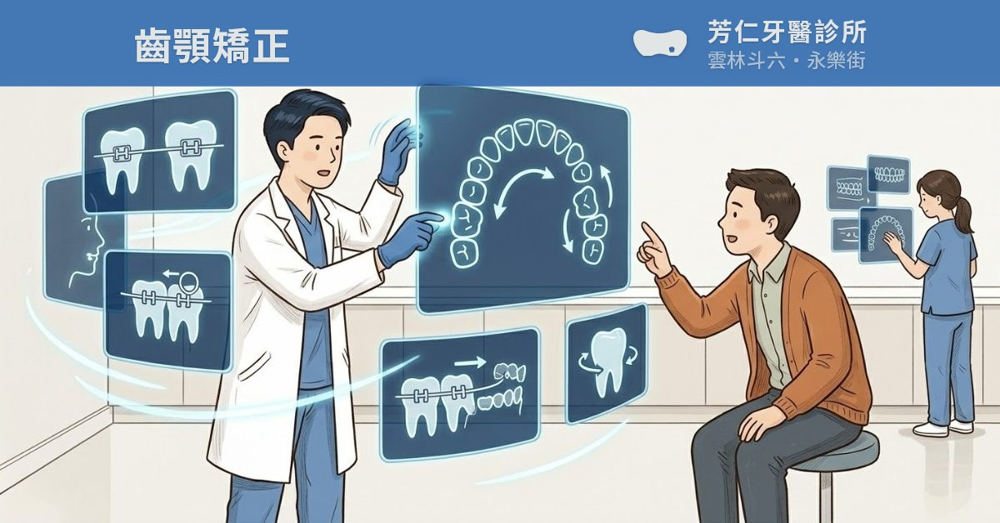
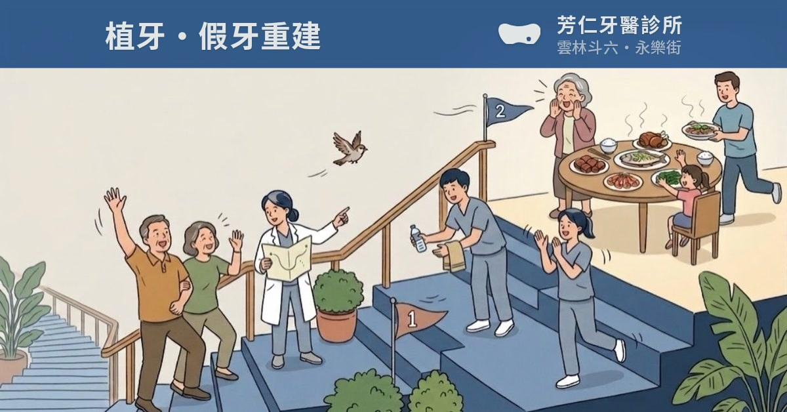

四格都是真的產出檔，不是用 CSS 疊的。上面那排是訊息卡的真實尺寸（212px）， 矯正那張固定放左邊當對照 —— 判斷「會不會撞」要看這一排，不要看下面的大圖。
矯正（已上線）

植牙・Ⓐ 現況

| 帶子實際落在 | |
|---|---|
| 亮度 L* | |
| 比矯正深多少（ΔL*） | |
| 和矯正的色差 ΔE | |
| 紙色字對帶子 |
⚠ 矯正的帶子是 rgb(68,120,180)・L* 49.4・紙色字 3.61。
⚠ ΔE 是 CIE76。全站原本最近的一對就是「矯正 × 贋復」ΔE 13.3（CLAUDE.md 第九節第 7 條），
Ⓐ 量出來 13.7 —— 你擔心的那件事，數字上確實成立。
⚠ Ⓐ 是站上那顆標籤的顏色（套色 #335b8b）；選 Ⓑ 以後，帶子就不再等於標籤色
—— 那是取捨：帶子和矯正拉開，但和自己頁面上的標籤不一致。Ⓓ 是站上的「深階」（白底字用的那一階），不是新色。